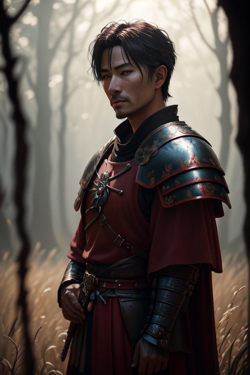
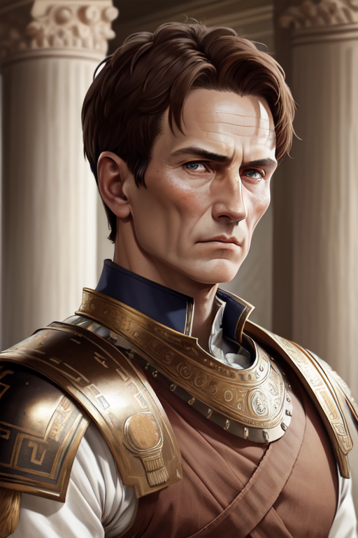
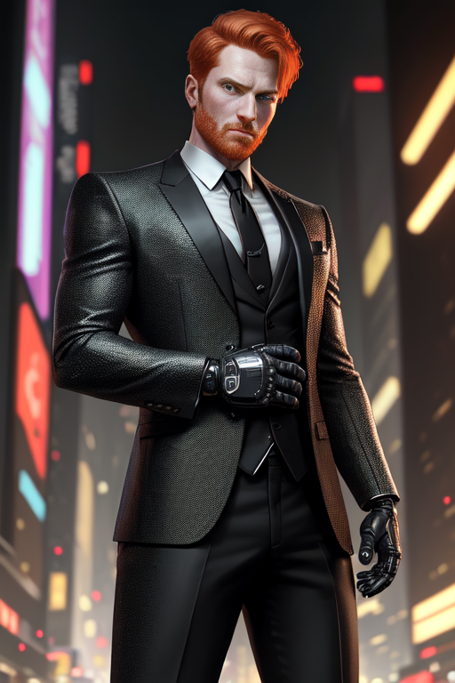

[Characters]
[Main Villians]
Mike Felsing

Mike isn’t really a bad guy, he just messed with time, so times gotta mess with him back. An accomplished scientist, Mike has revolutionized agriculture and transportation while also finding a way to time travel. After the whole meta human incident, Mike knew that outlandish ideas might be true, causing him to develop time travel. His goal at first was to just see the old west, maybe live there a while. But after becoming sheriff in the old west, he realized he had the power to right the wrongs of history. From there he goes on his quest to change bad events in history and see how they would unfold in the present day. After saving caesar, he realized he could do a lot more scientific work if he had more money and was his own boss. Gambling his life away, he made a ton of money at various casinos of the world. Starting his own company called Brah Corp to invent new stuff. Currently creating high value drugs, some prototyping (!!). Create other mechanical innovations too. [STATS] Medtech, Age 39, rollstats pls In possession of 1 super strength pill [degraded (teir 4)] (old Rebirth gear)
Al Capone

Displaced out of the prohibition era, Capone is an excellent fixer, he knows how to coerce anyone to do anything. Upon arriving in Night City, he has gained a mass of bodies to his Mafia where he intends to take over the Night City Underground. His main source of income is the new drugs that Brah Corp is producing. All of his goons should be equipped with tommy guns, as class/style is always above function. [STATS] Fixer, idk age, rollstats pls
Aether Nova

Infamous Solo of 2179, Aether has more kills than anyone in his time. Equipped with the most latest cyberware and weaponry, Aether is unstoppable at imposing his will in 1866. Once displaced he took out nearly every gang leader and joined them into his own gang. Master of CQC, Aether wields a sword that doubles as a gun. In the wild west, Aether is out of his element, lack of technology and quick transportation, not to mention electricity, has hindered his fighting capability. To get to where he was, he used a power armor that made him virtually bulletproof, stolen from [CORP NAME]. Without a way to power the suit, he has taken some pieces off of it to make a makeshift armor he can wear without needing to power the suit. [STATS] Solo, young ish, rollstats Gun sword (datafort borg gun) Power suit (also datafort)
Franz Von Sickingen

Knight of the Holy Roman Empire, and advisor to King something, Sickingen was a very well trained knight, capable of besting any foe in a duel. Upon being displaced into 1942, he worked under Himmler as a bodyguard. Sickingen now leads the secret service equivalent to Himmler in 1943, with many others with the same skill set as him, plate mail and all. In order to keep up with the times, the chestpiece of the plate mail is a thicker steel plate to stop most bullet calibers. [STATS] Solo, old, rollstats B. sword Modded plate armor
Franz Ferdinand

Extremely buff, this Archduke can easily bench 3 times his weight. In this timeline, he is saved by a man named Max Fritz, albeit never known to the Archduke. Being the leader of the Austro-hungarian empire, he commands a large military force for the time and always has a security detail with him. Players need to be cautious in a close quarters engagement with this man, as he can rip their arms from their body with ease. [STATS] Corp, idk age, rollstats Classic nagant revolver Bod 10, super strength tier 1
Sanada Yukimura
An accomplished samurai from feudal Japan, this man has nothing to lose but honor in ancient Rome. His sole quest is to return home to Japan, but to do that he needs a convoy to make it across the world and back to his home. Yukimura will stop at nothing to get back, even going out of his way to eliminate the hierarchy of the Roman Government. Players will want to bring him back alive, lest they need to have someone replace him in his time to continue his legacy. [STATS] Solo, young ish, rollstats Expertly crafted katana
Julius Caesar
What is there to say, Caesar is the great conqueror and one of the greatest Roman Emperors. Expert tactician and brilliant duelist, Julius is a very hard man to kill. After being warned of the attempt on his life, he now has an elite security detail to prevent any such occurrences. Mike also gave him a gun… Luckily players have an ally in this situation, as Yukimura would gladly help kill Caesar if it lead to his return home. [STATS] Sturdy Bronze Armor Bronze sword Revolver of some kind, no true skill to use it though
[Side Characters]
Ron Elbert
A reasonable fixer in Night City, he commands the “Night Blood” gang and owns various shops around the northside of Night City. He aims high and wants the Mafia out of his territory. The Mafia has shown that with a large amount of capital, anything is possible. Right now the best way to gain capital is drugs and weapons, which the Mafia has a lot of. The Night Bloods are a fierce gang, who love close quarters combat. Primarily carrying shotguns, these goons are light on their feet and quick to get to the enemy. [STATS] Mid Fixer, 35, rollstats Handgun and shotgun Cyber arm